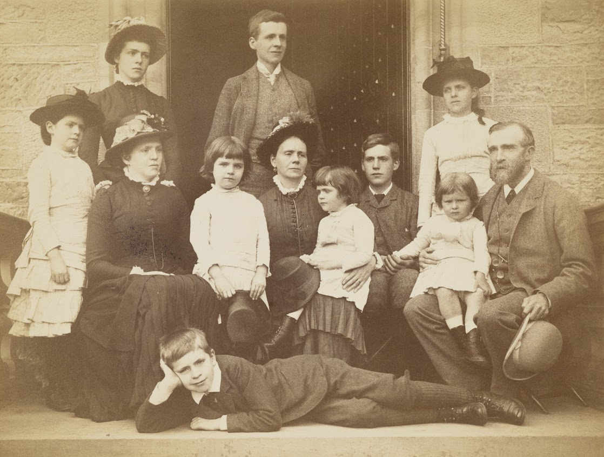

The Parish Hall was erected and gifted to the town thanks to Miss Jane Leslie Findlay of Kinermony.
Jane Leslie Findlay (1864–1931) was the eldest daughter of the first John Ritchie Findlay and Susan Leslie, and elder sister of Sir John Ritchie Findlay. The Findlays had 10 children, and Jane was the eldest of three maiden aunts, who lived at Kinermony House. Elizabeth (1867–1948) and Grace (1874–1957) were the two other unmarried sisters, also endowed the Hall. Jane was a keen artists and painted watercolours of the area and particularly the salmon pools of the river Spey.
Jane, with support from her sisters, funded the construction of this Parish Hall, and gifted it to the residents of Aberlour in 1926. It was a very popular community centre, used by the church Sunday school and a wide variety of community groups over the years. The Hall also served as a NAAFI canteen for the many servicemen stationed in Aberlour during World War II.
Kinermony House
Kinermony House was built circa 1900 as the dowager house for the Aberlour Estate that the Findlay family acquired in 1887, as well as estates at Edinvillie and Buchromb. The house was funded by the sisters' brother, Sir John Findlay, and designed by their younger brother, James Leslie Findlay (30 April 1868 – 19 September 1952). James, the younger son of John Ritchie Findlay and Susan Leslie, was also the architect for the Fleming Hospital in Aberlour. He practiced as an architect in Edinburgh between 1885 and 1915, and went into partnership with James Bow Dunn in 1894. The partnership's most notable building is probably The Scotsman building in Edinburgh's North Bridge, begun in 1898, now (2023) the Scotsman Hotel.
James served in the Great War (1914 – 1918), reaching the rank of Lt Colonel, commanding the First Lowland Brigade of the Royal Field Artillery in France. Invalided out of the Army he did not resume his architectural career, but retired to the house in Craigellachie, Banffshire.

This picture shows Jane Leslie Findlay in the front row (left) wearing a floral hat. The other people are Jane's parents – John Ritchie Findlay and Susan Leslie – with their 10 children.
John Ritchie Findlay and Susan Leslie with their 10 children. The future Sir John stands beside his mother in the back row (left). James, architect of Kinermony House, sits by his mother in the centre left of the group. Jane Leslie Findlay is the girl wearing the floral hat in the front row (left). This photograph was taken in 1882.
Extracts from the Obituary of:
Sir J. R. Findlay
Sir John Ritchie Findlay, Bt. of Aberlour, K.B.E., Lord Lieutenant of Banffshire, died at his residence, 3, Rothesay-terrace, Edinburgh on 13 April 1930. He was in his 65th year.
The eldest son of the late Mr. J. Ritchie Findlay, of Aberlour, who was a nephew of the founder of The Scotsman, the late baronet became on his father's death in 1898 the principal partner in Messrs. John Ritchie and Co., the proprietors and publishers of The Scotsman and its associated newspapers. He never entered the competitive arena of local or national politics, but his services were much sought after on semi-public administrative boards and public committees, and he gave himself unstintedly in that work. Sir John Findlay was particularly interested in the furtherance and encouragement of art and archaeology, in which he followed in the footsteps of is father, the donor to the nation of the Scottish National Portrait Gallery in Queen-street, Edinburgh. Sir John was Chairman of the Board of Trustees for the National Galleries of Scotland, and for a long time Chairman of the Edinburgh College of Art. His antiquarian interests found an outlet in his position as Vice-Chairman of the Scottish Ancient Monuments Board, and he was also an original member of the Royal Fine Art Commission of Scotland. He gave useful service to Scottish education as a member of the Advisory Council to the Scottish Education Department, and he undertook a very heavy task a few years ago when he became Chairman of the Scottish Advisory Committee on the Rivers Pollution.
The Findlay Baronetcy, of Aberlour in the County of Banff, was a title in the Baronetage of the United Kingdom. It was created on June 25, 1925 for the proprietor of the ‘Scotsman’ newspaper and philanthropist Sir John Ritchie Findlay. He was the eldest son of John Ritchie Findlay.
Sir John was succeeded by his eldest son, Sir (John) Edmund Ritchie Findlay, 2nd Baronet (1902–1962). He sat as member of parliament for Banffshire. On his death the title passed to his younger brother, Sir Roland Lewis Findlay, 3rd Baronet (1903–1979).
The title became extinct on the latter's death in 1979.
The two Findlay windows behind the altar in Aberlour Parish church are dedicated to Sir John and his wife Harriet Jane, daughter of air Jonathon Backhouse, of Darlington. They married in 1901 and had five children.